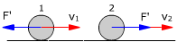
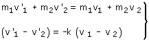

Choque frontal En un choque frontal las velocidades de los cuerpos que chocan y las fuerzas de contacto entre ellos tienen la misma dirección y como consecuencia, las velocidades después del choque tienen esa misma dirección.  En la bola 2, la fuerza va a favor de su velocidad por eso esta aumentará pero en la bola 1 va en contra de su velocidad por eso esta disminuirá, se anulará o invertirá Método Se toma uno de los ejes en la dirección del movimiento Se aplican el principio de conservación del momento lineal y la condición de choque frontal 
Signos No se pone signo a las componentes de la velocidad pues estas lo llevan incluido. Cuando sean incógnitas, al despejarlas se obtendrá el valor con su signo y cuando sean datos habrá que sustituir la variable por el valor con su signo |